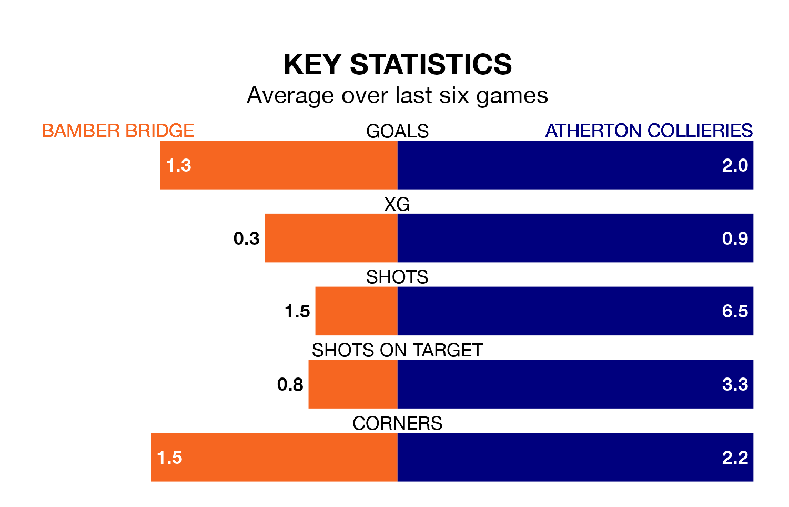

Bamber Bridge are heavy favourites to keep all three points at home in Saturday's kick-off against Atherton Collieries.
Bamber Bridge, who sit 15th in the Northern Premier League with 29 games played, are priced at 1.5 to seal victory at the Sir Tom Finney Stadium.
Sitting six places and 16 points behind them in the table, Atherton Collieries are 4.8 to win with *Betting Company*, while the draw is at 4.5.
In the last 10 years, Bamber Bridge and Atherton Collieries have played each other on eight occasions. They won four each.
On average, Bamber Bridge scored 1.5 goals and Atherton Collieries 1.8 in those matches.
Their last meeting was on September 26, when Bamber Bridge won 2-1 away.
Bamber Bridge are in bad form in the Northern Premier League, with one win and a draw from their last six games.
And also with a win and a draw over that period, Atherton Collieries's form is identical – they have both taken four points from 18.
With 37 goals in 29 games so far this season, the visitors are scoring at below the league average rate with 1.3 goals per game. And they are conceding more than average, letting in 74 goals at a rate of 2.6 per game.
The home side are also below average scorers, with 1.6 goals per game, compared to a league average of 1.7. They have conceded 1.9 goals per game.
Bamber Bridge's last match was on February 10, a 3-1 win against Morpeth Town.
Atherton Collieries drew 2-2 with Radcliffe Borough last time out, on Tuesday.
Updated: 13:04 (UTC), 16/02/24